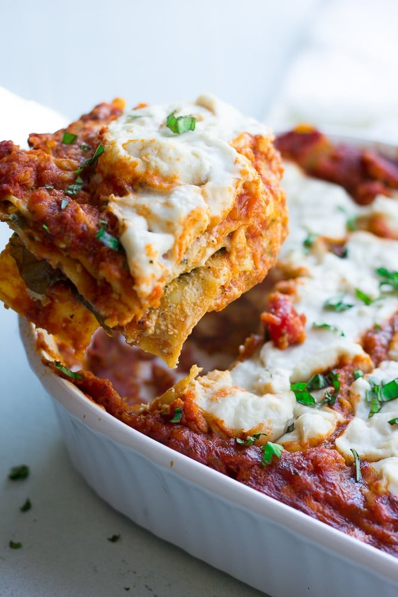

Air Fried Sweet Potato

Description
A baked sweet potato in the air fryer comes out beautifully
crusty on the outside and light and fluffy on the inside,
just what a great baked potato should be! Serve them with
your favorite toppings.
Ingredients
- Sweet Potato
- 1 tbsp avocado or olive oil
- Chives
- 1/2 tsp coarse sea salt
Directions
- Preheat an air fryer to 400 degrees F (200 degrees C).
- Brush potatoes with oil of choice, sprinkle with salt, and place them in the air fryer basket.
- Cook potatoes until very tender when pierced with a fork, about 1 hour.
- Add chives when they are done!